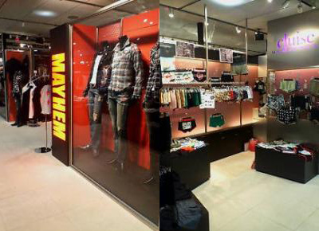
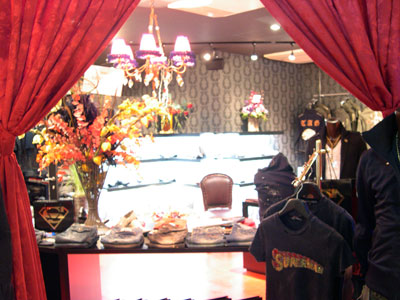

ホーム >> ニュース
業界ニュース
- 2006年12月29日 Cluise under wear

楽天通販サイトOPEN！
cluise 楽天通販サイトへ行く！
直接リンク：http://www.rakuten.ne.jp/
- 2006年11月17日 GENNARO、MAYHEM、CLUB CAMELOT
渋谷コレクションにてファッションショー。
GENNARO（リンク：http://www.rakuten.ne.jp/）、MAYHEM（リンク：http://www.rakuten.ne.jp/）、CLUB CAMELOT （リンク：http://www.moba.bz/）渋谷コレクション
シブコレにてファッションショーを行いました。
詳細情報（リンク：http://www.moba.bz/）
- 2006年10月30日 CLUISE
あっ！とモバイルにて紹介。 -
Cluise under wearがあっ！とモバイルpresents モバチャン6〜VANQUISH 石川涼の「いっせーのっ!!」にて紹介されました。
番組を見る（リンク：http://www.odoroku.tv/）
- 2006年10月13日 CLUISE＆MAYHEM
サンシャイン名古屋栄 オープン。 
10月13日金曜日、サンシャイン名古屋栄店でCLUISEとMAYHEMがオープンしました。
CLUISE TEL：05
MAYHEM TEL：05
- 2006年9月15日 GENNARO
渋谷109-2の6F オープン。 
住所：東京都渋谷区
TEL：03
FAX：03
- 2006年8月1日 BUBBLY
レディース通販サイト オープン！
近年ギャル達のLIFE STYLEに定着しつつあるセクシーさ、可愛さ、強さ･･･
そして時代とともに変化する敏感なギャル達の最先端。
それらを求める女性達に支援され、共に流行を発信する
レディースショッピングサイトBUBBLY。
直接リンク：http://www.rakuten.ne.jp/